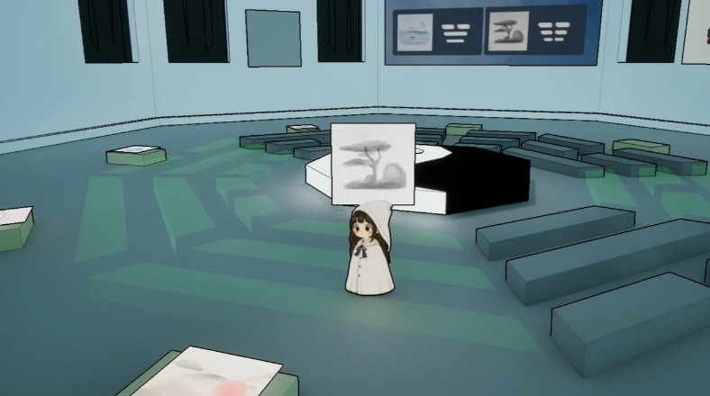
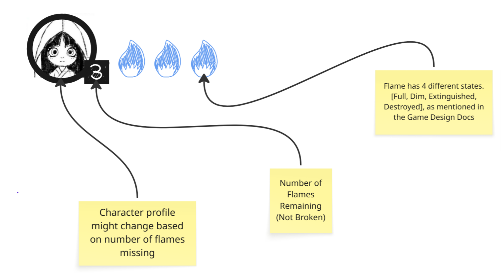
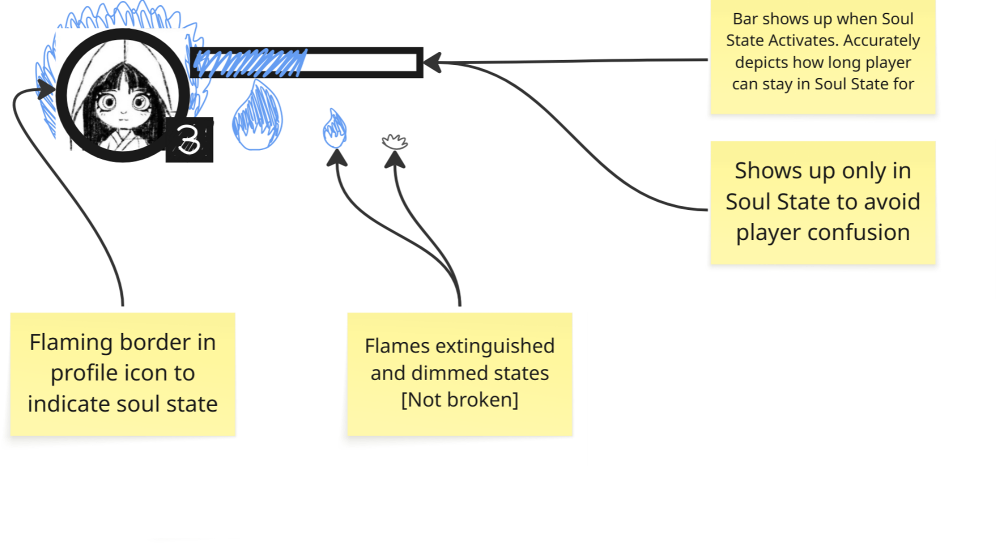
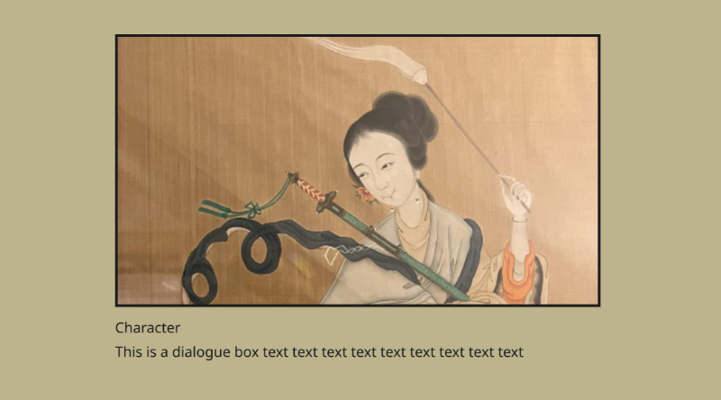
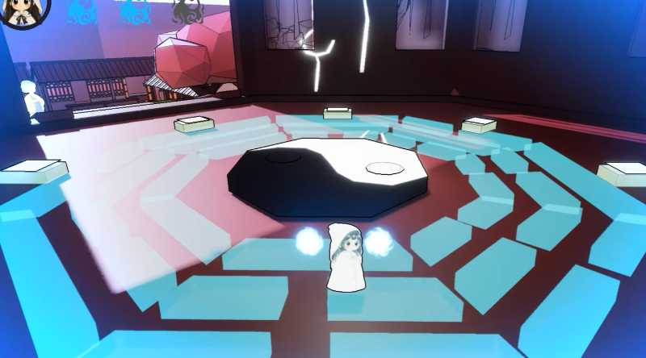

《Before You Cross》是我在倫敦大學金史密斯學院遊戲設計課程中，為畢業項目製作的一款遊戲。
這是一款使用虛幻引擎開發的 3D 解謎平台遊戲，我與另外三名團隊成員共同完成了這款作品。
玩家角色將在死者之地中探索，通過切換不同的靈魂形態來解決謎題，並最終找到已故的祖母，向她道別。
維度切換是遊戲的核心循環，玩家需要在不同靈魂形態之間切換，以解決環境謎題並探索這個世界。
我負責以下工作：
- 編寫遊戲核心機制與系統
- 設計與靈魂切換相關的遊戲機制
- 設計遊戲介面的 UI/UX
程序編寫
我的職責
作為本項目的主要技術設計師與程序員，我不僅負責實現遊戲中的大部分機制，
還要確保程序結構清晰、易於維護和重複使用，並讓這些機制能夠以合理的工作量完成實現。
作為一款維度切換解謎平台遊戲，本作會將玩家在沿 Y 軸排列的兩個平行世界之間傳送。
兩個世界共享部分子關卡，因此共享的資產與互動道具都可以在同一個場景中統一更新。
檢查點系統、火焰互動道具、敵人行為，以及其他在不同世界中具有不同屬性的對象，均被整合進這套維度切換系統。
風與火焰的粒子效果通過材質着色器和 Niagara 粒子系統實現。該系統提供了大量參數設置，
能夠高效地產生粒子，同時確保最佳的視覺效果。
火焰的粒子效果

我還主要負責實現遊戲第二關中的八卦匹配謎題系統，玩家需要將獲得的畫作與八卦中的卦象進行匹配。
我採用數據驅動的方法，由一個模塊化腳本處理所有卦象，並使用每個對象的精靈引用作為唯一 ID，驗證畫作是否放置正確。
已匹配部分畫作的八卦系統

版本控制
本項目使用版本控制，並以 Perforce 作為主要的版本控制軟件。我協助設置 Perforce 服務器，
並幫助團隊成員配置客戶端。
UI/UX 設計
我的職責
我設計並實現了遊戲的完整 UI 與 UX 系統，涵蓋抬頭顯示界面和世界空間中的互動對象。
這些 UI 與 UX 元素以簡潔為設計目標，同時為玩家提供信息並改善遊戲內的導航體驗。
我的想法
和我通常規劃 UI 設計的方式一樣，我會先製作帶有注釋的線框圖，待團隊達成共識後，再將設計實現為最終界面。
由於玩家將在遊戲中獲得 3 個太陽火焰，抬頭顯示界面會展示火焰的收集進度。
我最初為 3 個可收集的太陽火焰設計了帶冷卻條的界面，但在冷卻機制被刪去後，便將設計簡化了。
遊戲內 UI 線框狀態 1［已棄用］

遊戲內 UI 線框狀態 2［已棄用］

遊戲通過對話框和過場動畫向玩家呈現文本，以豐富敘事並完善世界觀塑造。
最初，我只設計了在玩家與角色進行實體互動時出現的可互動對話框。
後來發現玩家沒有足夠時間逐一與區域內的每個 NPC 互動，因此我參考了《紙片馬里奧》等遊戲，
在 NPC 上方設計了浮動對話框，並在玩家進入 NPC 一定距離內時觸發。
遊戲包含開場和結尾過場動畫。由於開發時間有限，這些內容必須以簡單、易於編輯和維護的方式實現。
我選擇使用靜態圖片展示特定事件，並在圖片底部配上文字。
過場動畫 UI 線框圖

對象互動是遊戲的重要組成部分，玩家需要知道哪些對象可以互動，哪些對象不能互動。
最初，玩家觸手可及的互動對象會在網格外顯示黃色輪廓；但後來發現這種方式對部分玩家來說不夠明顯，
因此改為使用藍色材質高亮網格。
在八卦匹配謎題中，顏色變化不僅用於表示可互動的卦象，也用於表示畫作在八卦中的正確放置位置。
所有卦象正確放置後的八卦
